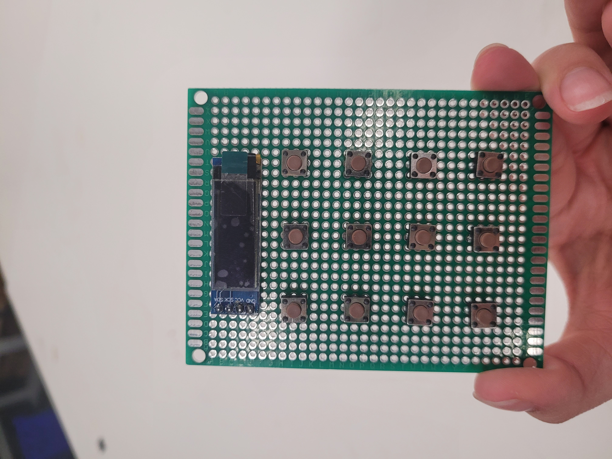
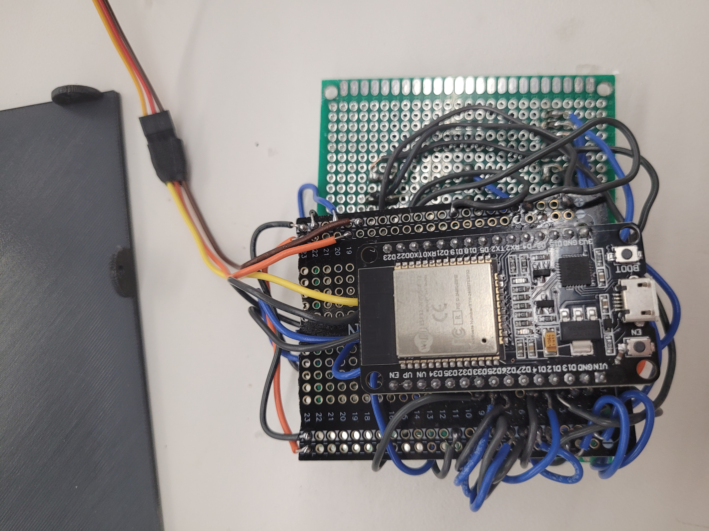

<div class="textcontainer">
<p class="margin"> </p>
<h1 class="bounce">Final Project: KEYper</h1>
<style>
.bounce {
font-size: 3em;
font-weight: bold;
color: #ff66b2;
text-align: center;
font-family: 'Comic Sans MS', cursive, sans-serif;
animation: bounce 1.5s infinite;
}
@keyframes bounce {
0%, 100% { transform: translateY(0); }
50% { transform: translateY(-10px); }
}
</style>
<p class = "margin"></p>
<div class="text-box">The Idea</div>
<style>
.text-box {
display: inline-block;
padding: 10px 15px;
border: 2px solid rgb(201, 74, 140);
border-radius: 5px;
background-color: rgb(243, 181, 218);
font-size: 16px;
font-weight: bold;
}
</style>
<br>
I live in a big dorm with many people! We're always forgetting our keys or leaving it in the door for guests and partners. What if there was a secure way we can keep the key right on our door?
Introducing KEYper... a rental-friendly, dorm-friendly key dispenser.
<p class = "margin"></p>
<video autoplay loop muted playsinline style="width:30%; height:auto;">
<source src="pan.mp4" type="video/mp4">
</video>
<br>
<img src="front.jpg" alt="Image 1" style="width: 25%; display: inline-block;">
<br>
<div class="text-box">How To Use</div>
<p class = "margin"></p>
<br>
*Note: the keys are a little finnicky so please be careful!
The password is 1234. Press the "Enter" arrow to submit the password. If successful, the screen will display "Success!" The key will be dispensed and you must return key when the screen displays "RETURN KEY!"
<br>
<video autoplay loop muted playsinline style="width:60%; height:auto;">
<source src="final.mp4" type="video/mp4">
</video>
<br>
<div class="text-box">The Process</div>
<p class = "margin"></p>
<br>
<br>
1. I first began with a process to create my project out of cardboard. I anticipated the hardest part to be getting the servo to work as intended. It needed to be able to withstand the impact of a key and also open at a slant that was enough for the key to slide out.
<br>
<img src="test1.jpg" alt="Image 1" style="width: 25%; display: inline-block;">
<br>
<img src="stack.jpg" alt="Image 1" style="width: 25%; display: inline-block;">
<br>
In the image above, I had gotten the servo to work, but I was worried about the weight and force capacity of it. It was really gratifying being able to get a draft up by using the laser cutter though! It was really helpful with the measurements of everything. At this point, I still wanted to make the servo a part of a system with an arm (as seen in the MVP stage) but was trying to figure out the spacing for it.
<br>
<br>
2. Then, I started working on the next hardest part which was the soldering. I had tried everything out on the breadboard first and learned that not all pins on the Esp32 can take the input and output I need for a button. I had 12 buttons, an OLED, and a servo to power and by sheer luck I had just enough working pins on my dev board to have everything working. Soldering was the next part and learning how to do it was really fun! It was tricky trying to find a way to solder without melting the plastic off the buttons. Ultimately, I was able to successfully get everything working with the soldered protoboard.
<br>

<br>
<br>
3. Next, I wanted to start building out the actual frame. I decided to 3D print the back and front of the container, but cut the rest of the faces out of acrylic so I'd have more time to iterate since printing blocks takes too long. The 3D pieces came out really nice, it just took me an hour to get supports off because of the way I oriented it in Prusa. Noting this so I remember to check the orientation next time! Here's a picture of the assembly process. I decided to use wood for the central support as it was sturdier than both the 3D print and acrylic due to some of the thinner regions that I had cut out to fit the servo. I also tried making an angle from front to back so that it would serve as a natural ramp for the key, but I realized that I was sacrificing height that was necessary for my protoboard. I tried cutting the protoboard but it still would not fit with the slanted design and I wanted to keep everything as compact as possible so I ended up with a box with uniform heights.
<br>
<img src="test2.jpg" alt="Image 1" style="width: 25%; display: inline-block;">
<br>
<br>
4. The assembly process took me quite a while as I had some different iterations of the 3D printed pieces with places to fit M3 screws but my measurements didn't match up with the nut I had to attach at the back. This was a trial process and I ended up using some wood to test it out as I had so few pieces of acrylic left.
<br>
<br>
5. Everything fit really smoothly with the servo and the key hole pieces. I ended up making a small barricade around the area that the servo would move so that the key would fall more accurately into an optimal position. The servo simply had a piece of wood glued onto it. After many iterations and testing a few mechanisms, I figured this was the method that worked the best and saved the most space.
<br>
<video autoplay loop muted playsinline style="width:60%; height:auto;">
<source src="process.mp4" type="video/mp4">
</video>
<br>

<img src="protoboard2.jpg" alt="Image 1" style="width: 25%; display: inline-block;">
<br>
<br>
6. The next challenge was the buttons. This was probably the most time consuming part: I spent over 6 hours designing these keys from scratch and gluing these 3D printed keys onto the buttons. The problems were twofold: first, when I had soldered on the buttons, some of them where in slightly angled orientations. This meant that the 3D printed keys would not fit perfectly flat on top of the button. Secondly, the buttons are so fragile that if I pulled off the 3D printed key to readjust the positioning, sometimes the buttons would actually just come apart so I would have to take off the solder and re-solder on a new button. This process took way longer than I anticipated. What's worse is that I had made a case for the keys to fit into with a 3.5mm diameter adjustment, but the orientations of the buttons were so different that they would either get stuck or be in a perpetual state of being pressed. My ultimate solution was to use the laser cutter and just cut all the key holes out.
<br>
<img src="test4.jpg" alt="Image 1" style="width: 25%; display: inline-block;">
<br>
<br>
7. Ultimately, it took a lot of trouble-shooting, patience, and many late nights at the lab but I'm super happy about how much I've learned through the process. Going forward, this mechanism is still being powered by my laptop because I did not account for the height of the wires necessary to connect by battery pack to my protoboard. I also want to work to connect the firebase server to this so that I can handle everything remotely without having to push code from arduino every time.
</div>